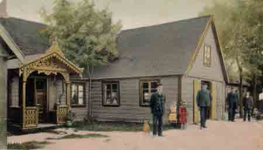

|
VIBY i gamla tider |
OM HANDELN I BYN |
||
|---|---|---|---|
|
|
|||
|
Nils Svensson Speceri & Diversehandel |
|||
|
 Peter Johan Anderssons affär i Håslöv. |
 1912 övertogs affären av Per Svensson. |
Om handeln i Byn | |
|
Firman startades vid sekelskiftet av Peter Johan Andersson, en kringresande försäljare från Traryd i Småland. År 1912 övertog min farfar Per Svensson affären. Åren 1936-1937 byggdes den nya affären av Bror Vinkvist med hjälp av Gösta Karlström År 1940 övertog min far Nils affären, och drev den till 28 oktober 1969,då den lades ner på grund av att en ny favörhall etablerats i byn. Sedermera öppnade Posten sin expedition i jan 1975 . Den bemannades av Ingrid Persson. Posten flyttade till Favörhallen i augusti 1991. Affären var en utpräglad lanthandel med stort sortiment utöver samtliga dagligvaror även spik, taggtråd och hötjugor. Fotogen och rödsprit som pumpades upp i kannor och flaskor, hönsfoder, snäckskal, salt sill och textilier, samt porslin, tidningar och tobak. Affären var också ombud för Tipstjänst. Vi får inte glömma mjölkaffären i källarplanet. När jag var yngre fick jag ofta följa med far till stationen och hämta mjölken som kom med Åhuståget. Det var tunga 40 liters kannor som vi släpade upp på cykelkärran och sedan ner för trappan till mjölkaffären. Smöret kom också med tåget, det kom från Rinkaby Mejeri. Det hände en incident som gjorde att många av våra kunder kom tillbaka samma dag och ville ha mera mjölk, mejeriet hade av misstag levererat 40 l vispgrädde istället för mjölk. Vi levererade också mjölksyra och skummjölk till Viby Likkistefabriker, som dom blandade i färgen till kistorna. Vi har väl någon här som kan verifiera detta. Vi hade även en brandsiren på taket, därför att vårt hus var så högt och låg centralt i byn. Det hände då och då att vi fick tuta bland annat när det brann på Hammarshus trots att det låg utanför Gustav Adolfs kommun. Jag fick tillåtelse av Ivar att tuta. (1950) Ibland fungerade båda sirenerna ibland inte. Med anledning av att Arne tog upp på tidigare info att far hade fått avslag på försäljning av pilsner, vill jag här visa att 1950 fick far tillståndet. Mycket av dagen förpackade varor kom i lös vikt, varvid vi fick väga upp i hel och halvkilospåsar, t.ex. socker, salt, soda, torkad frukt, ärtor och bruna bönor. Kaffebönorna var i lös vikt som vi malde efter hand. (snus-malet kaffe) Innan Melittabryggarna kom så var det tygpåsen som gällde. Arbetstiderna var långa och middagsmaten intog man snabbt för att återgå till kunderna. Till julen kom det apelsiner och clementiner i trähäckar samt druvor som var förpackade i korksmulor i trätunnor. Det var lite av julafton när varubilen med julsakerna kom Julskyltningssöndagen var ju spännande när vi var små. Det städades hela natten alla hyllor skulle torkas av och affären julpyntas. Allt skulle vara klart till söndagen då många av byns barn kom och tittade. Ibland fick vi agera jultomtar inne i affären. Många kunder handlade på bok och betalde när lönen kom. Alla kommer vi väl ihåg ransoneringskorten Det hände mycket under 1900-talet från att det under 1:a världskriget var viktiga livsmedel som var ransonerade under tiden 1916-1919, även under 2:a världskriget ransonerades de flesta varorna. Kaffet blev den längst ransonerade varan den blev fri i augusti 1951. Det tillkom en ransoneringslag 1954 som skulle träda i kraft automatiskt ifall Sverige i framtiden skulle drabbas av krig. Den som bryter mot denna lag kan bestraffas med dagsböter eller högst 6 månaders fängelse. När man tänker tillbaka på åren som har gått, kommer man på en del betydelsefulla saker såsom när vi fick frysboxen så att vi kunde sälja glass med mera, även när plastpåsarna kom med i bilden var det en revolutionerande sak. När far var inkallad hjälpte Ivar mor i affären. Jag vill också nämna att vi hade duktiga medhjälpare i affären på senare tid bland annat Kerstin Ström, som var anställd i många år. Även Linnea Axelsson hjälpte till en längre tid. Sist men inte minst fick vi hjälp av Olly Ohlsson, vilket vi kan se på denna bild från stängningen av affären den 28 oktober 1969.
Vid pennan Ingvar Svensson |
1940 tog sonen Nils över |
||
|
som tillsammans med makan Svea drev affären till 1969 då den lades ner
|
|||
| Startsidan | |||